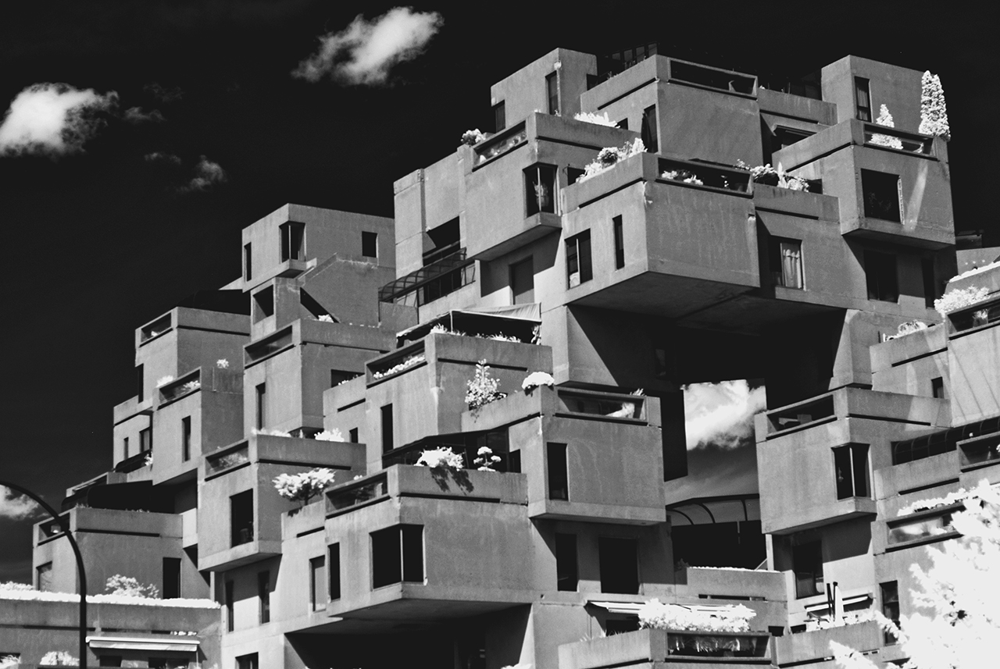
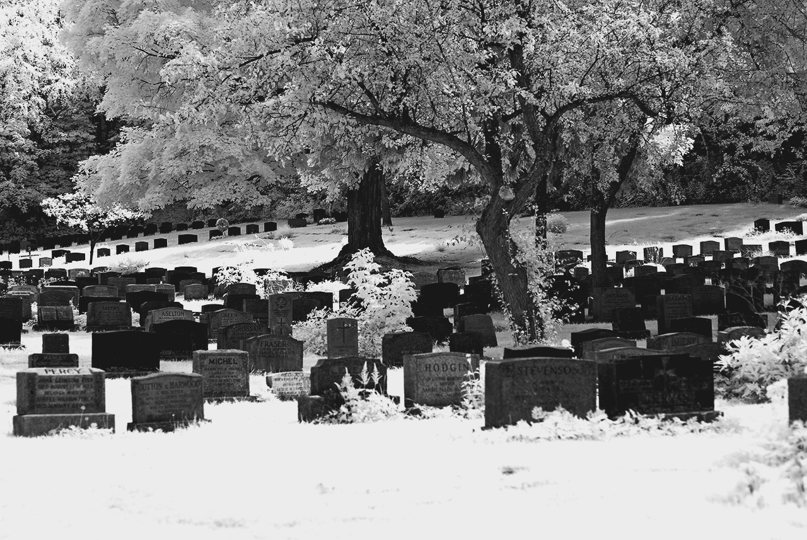
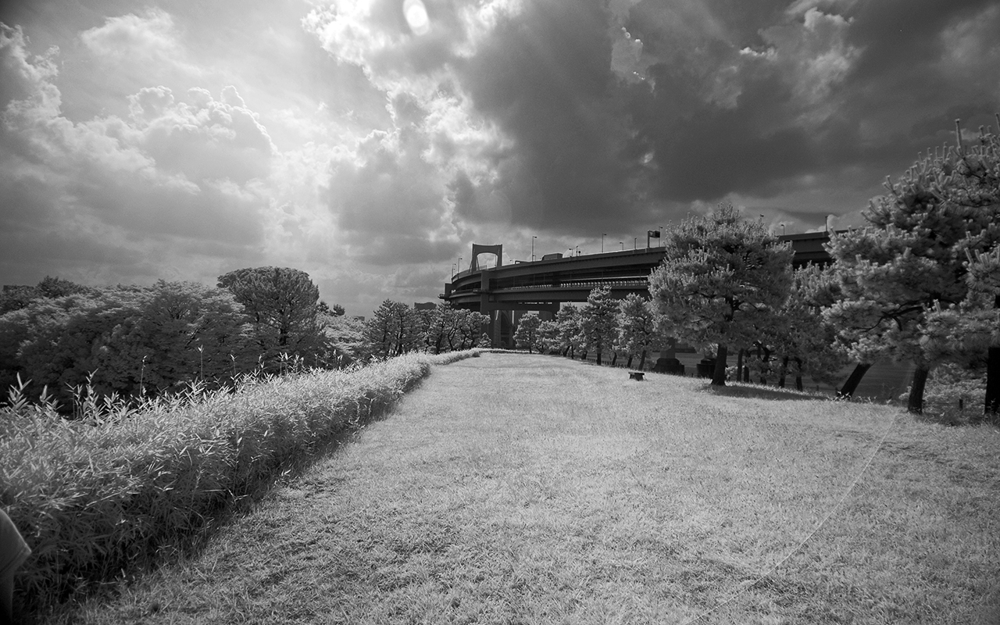
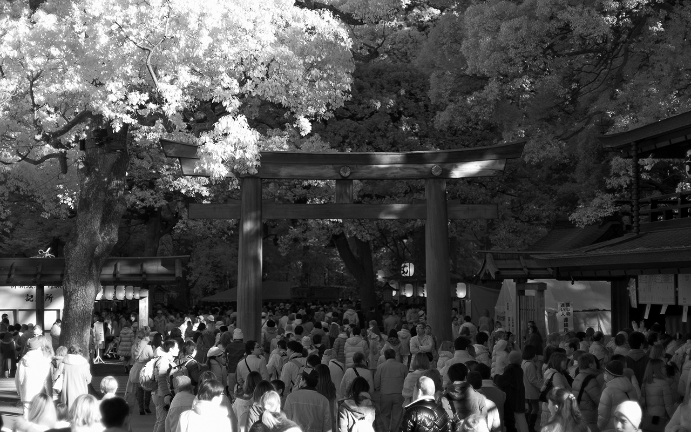
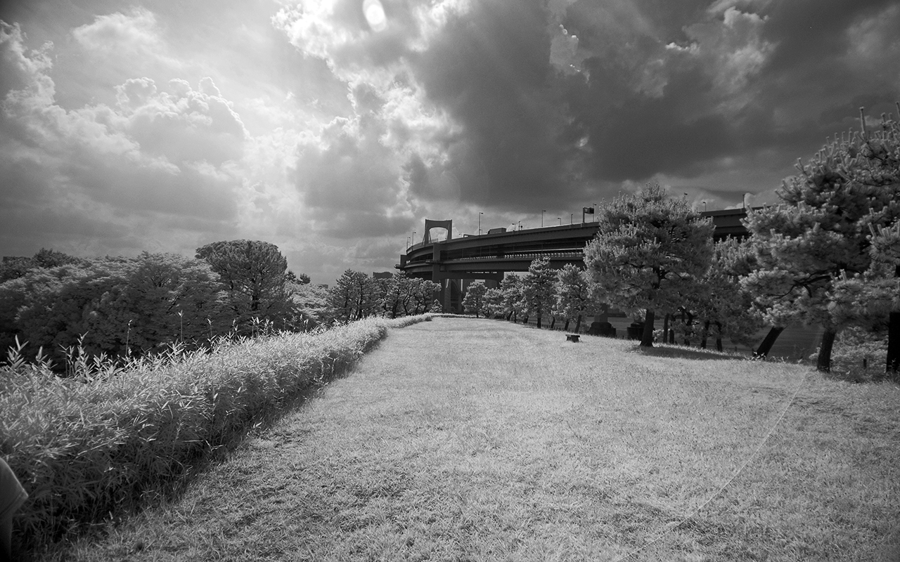
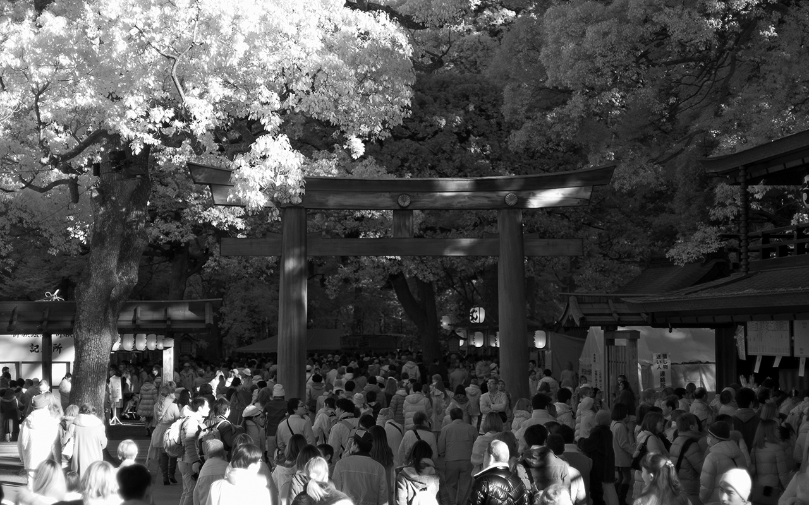

Habitat 6709P06The Infrared photographs were taken with a modified Nikon camera.
infrared — Graveyard09P02infrared — Rekka and Sunglasses09M11 infrared — Soldat07M09infrared — Infrared Set 207M06infrared — Tokyo Infrared II07A00
infrared — Soldat07M09infrared — Infrared Set 207M06infrared — Tokyo Infrared II07A00 infrared — Tokyo Infrared06X09
infrared — Tokyo Infrared06X09 infrared — Wereda06P10
infrared — Wereda06P10incoming: black